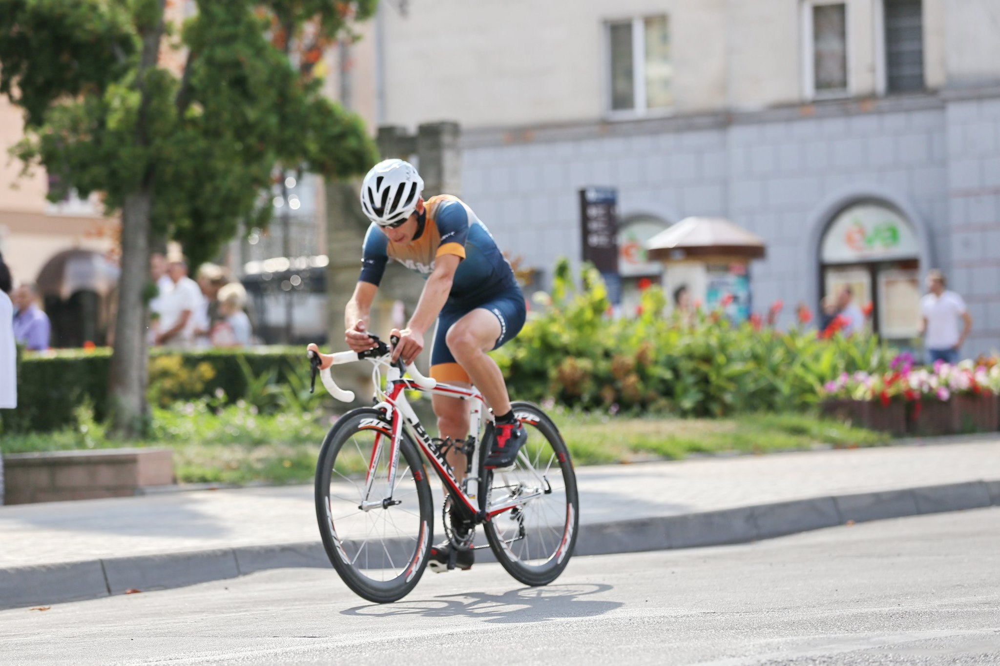
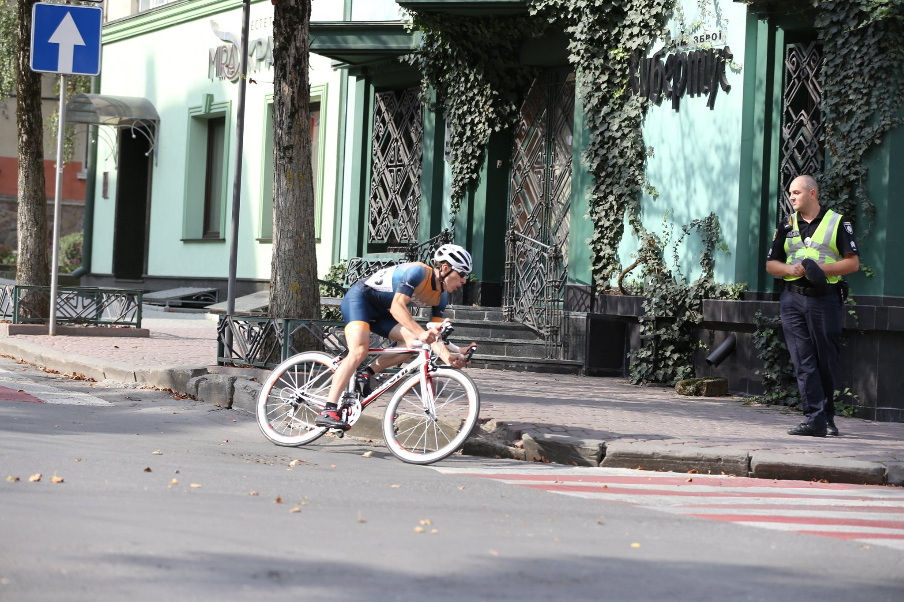
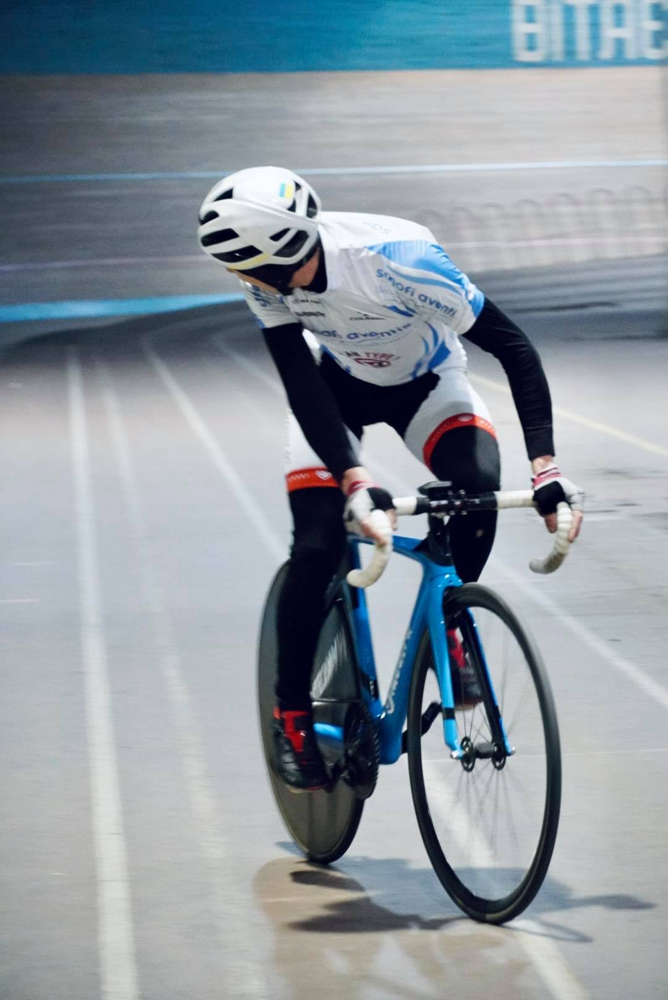

Зміст
- Користь для здоров’я
- Користь з екологічної точки зору
- Користь з економічної точки зору
- Користь з соціальної точки зору
- Підведемо підсумки
І перше, з чого хотілося б почати:
Користь для здоров’я
Найважливіший пункт з усього переліку. Велотренування є оптимальним і збалансованим видом спорту. Регулярні виїзди, наприклад, з інтервалом в один день на тиждень і тривалою поїздкою наприкінці тижня, позитивно позначаться на вашому здоров’ї та фігурі. Отже, катаючись на велосипеді, ми:
Зміцнюємо м’язи
Елемент опору їзди на велосипеді сприяє нарощуванню м’язової маси та зміцненню м’язів (ніг, грудей, спини, рук) у цілому. Вони набувають не тільки гарну форму, а й стають витривалішими.
Худнемо
Низька інтенсивність, аеробні та послідовні вправи є одним з найефективніших способів схуднення. Їзди на велосипеді, наприклад, протягом години досить для того, щоб почати втрачати зайві кілограми та небажані відкладення в області стегон. При цьому ваш організм спалює калорії у процесі їзди, а також протягом деякого часу після неї. Головне бути обережним і не переїдати після поїздки, так би мовити – не зійти з дистанції.
Зміцнюємо серцево-судинну систему
Їзда на велосипеді є відмінним кардиотренуванням, підвищує частоту серцевих скорочень і змушує кров циркулювати по всьому тілу. У результаті чого й є одним з видів вправ, рекомендованих в якості здорових способів знизити ризик розвитку серцевих захворювань. Дослідження показало, що регулярні поїздки на велосипеді можуть знизити ваші шанси на розвиток проблем з серцем на 50%.
Покращуємо тиск
Високий кров’яний тиск є фактором ризику серцевого нападу. А велопрогулянки – це одна з кращих вправ для зниження артеріального тиску, оскільки вона допомагає вашому організму циркулювати кров від ніг назад до серця.
Знижуємо холестерин
Велоспорт є одним з кращих способів підвищити рівень холестерину ЛПВЩ – хорошого холестерину – і знизити рівень холестерину ЛПНЩ – поганого холестерину. Усього два місяці регулярних велотренувань з інтенсивністю, яка підвищує частоту серцевих скорочень, але не змушує вас задихатися, досить, щоб підвищити рівень холестерину ЛПВЩ на 5%.